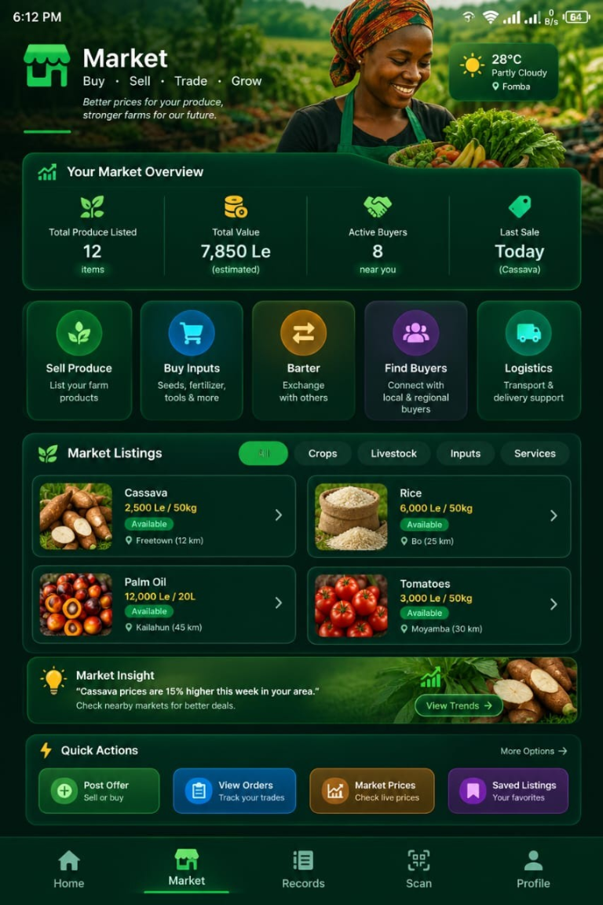

FeedSalone
In progress
An agricultural technology ecosystem designed to support farmers through digital farm records, agricultural marketplace functionality, and practical agricultural services.
Project details
- Technologies
- Not provided yet
- Repository
- Link not provided yet
- Demonstration
- Not provided yet